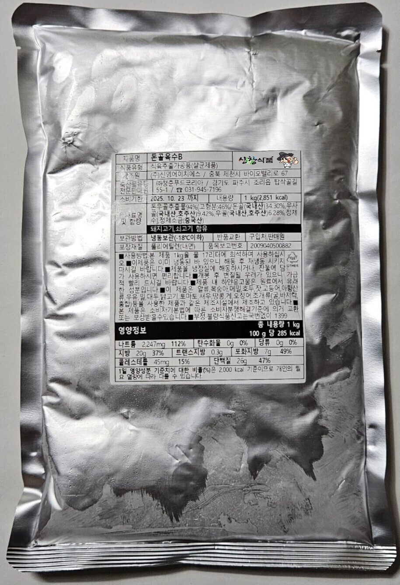

돈골육수/순대국 육수

★ 돈골육수 b : 순대국 육수 ★
돼지사골과 소사골 뼈에서 추출한 순수 농축액으로 돈골육수 b 입니다.
처음 끓기전까지는 센불로 끓이시고,끓고 나서는 약불로 10분간만 더 끓여 주심 됩니다.
개봉 후 변질될 우려가 있으니 가급적 바로 사용하시는 것이 좋아요.
희석 기본 배합은 육수1kg+물17kg입니다.
국밥집에서 순대국육수로 사용하지만 라멘집,김치찌개 전문점에서도 육수로 사용하며 떡국,전골육수 등 다양하게 쓰이는 깊고 진한 맛 돈골육수 입니다.

맛있는 순대와 순대국 재료 일절,신선한 부산물을 찾고 계신다면 주말,공휴일 언제든지 편하게 전화주셔서 상담 받아보세요. 순대납품,순대도매 및 업종변경이나 창업상담 환영합니다.
☎️ 대표전화 : 1533-6156